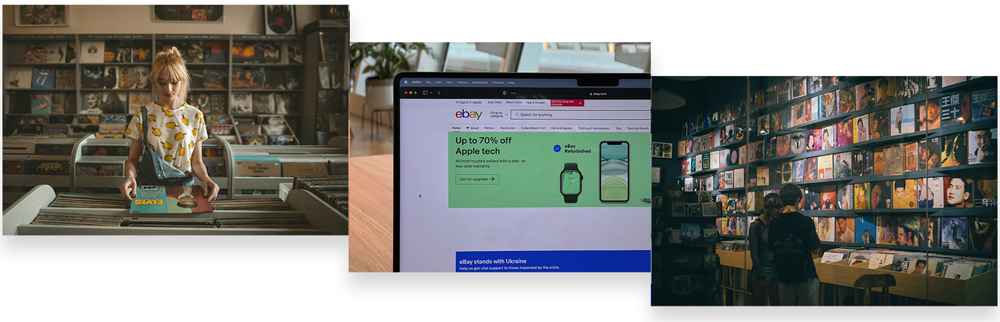
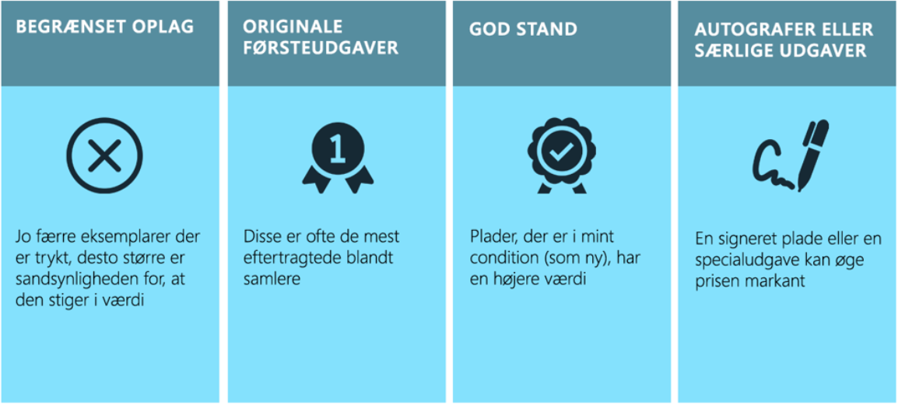

Eksklusive vinyludgivelser
Sådan får du fat i sjældne plader
Af
Tobias Rasmussen - 14/10/2024
Elsker du at samle på vinylplader? Så ved du sikkert allerede, at sjældne og eksklusive vinyludgivelser er noget af det mest eftertragtede for samlere. Men hvordan får man egentlig fat i disse sjældne plader, og hvor skal man lede? I denne guide deler vi nogle tips til, hvordan du kan finde de mest eksklusive og limited edition vinylplader, der kan løfte din samling til nye højder.
Hvad er sjældne vinylplader?
Sjældne vinylplader er ofte udgivelser, der blev trykt i begrænsede oplag eller aldrig genoptrykt, hvilket gør dem til eftertragtede samleobjekter. Det kan være en særlig udgave af et kendt album, en limited edition plade med farvet vinyl, eller en sjælden førsteudgave. Limited edition vinyl er særligt værdifulde, da de ofte kommer med unikke elementer, som man ikke finder i standardudgaver.
Udover den store glæde ved at eje noget unikt, kan sjældne vinylplader også være en god investering. Nogle plader stiger markant i værdi med tidne, især hvis de er velbevarede. For ekspel er visse førsteudgaver af klassiske albums blevet solgt for tusindvis af kroner på auktioner. Hvis du er en dedikeret samler, kan det derfor betale sig at vide, hvilke plader der har potentiale til at blive noget værd.
Selvom mange sjældne og eksklusive vinylplader bliver opdaget på brugtmarkeder og auktioner, kan du også finde eksklusive udgivelser hos butikker som Target. Targt har i de seneste år udvidet deres sortiment med specielle vinyludgivelser, der ofte inkluderer alternative covere, farvede vinylskiver eller ekstra tracks, som ikke er tilgængelige andre steder. Disse limiterede udgaver bliver ofte hurtigt udsolgt, hvilket kan gøre dem mere værdifulde over tid.
For samlere er det en spændende mulighed at få fingre i en eksklusiv plade direkte fra butikken, især fordi de kun er tilgængelige i begrænsede mængder. Så hvis du er på udkig efter noget unikt til din samling, er det værd at holde øje med disse specielle samarbejder, da de ikke bare tilbyder noget anderledes visuelt, men potentielt også kan stige i værdi som sjældne samleobjekter.

Sådan finder du sjældne vinylplader:
1. Online markedspladserWebsites som Discogs og eBay er to af de største markedspladser for sjældne vinylplader. Her kan du finde alt fra sjældne førsteudgaver til limited edition udgivelser fra både private sælgere og professionelle forhandlere. Begge platforme giver dig mulighed for at sammenligne priser og se historik over salg, så du kan vurdere, om du gør en god handel.
2. Plademesser og loppemarkederSelvom meget vinylsalg er rykket online, er der stadig noget magisk ved at bladre igennem kasser med plader på en plademesse eller et loppemarked. Mange samlere har fundet skjulte skatte til gode priser her. Det kræver dog, at du er tålmodig og klar til at lede. Sørg for at tjekke messer i din by, eller kig efter vinylmarkeder, hvor pladebutikker og private samlere mødes for at sælge deres plader.
3. Specialiserede vinylbutikker Nogle butikker specialiserer sig i sjældne plader og limited edition vinyludgivelser. Disse steder har ofte et tæt netværk af forhandlere og samlere, hvilket gør det lettere at finde noget helt unikt. Besøg lokale pladebutikker eller tjek onlinebutikker, der har et godt ry for at handle med eksklusive plader.
4. Vinylabonnementstjenester Nogle vinylabonnementstjenester tilbyder sjældne og eksklusive udgivelser til deres medlemmer. For eksempel har tjenester som Vinyl Me, Please specialudgivelser hver måned, hvor du kan få fat i limited edition plader, der ikke kan købes andre steder.
Hvilke vinylplader er noget værd?
Det er ikke alle plader, der stiger i værdi, men her er nogle ting, der kan øge sandsynligheden for, at en plade bliver noget værd:

At være vinylsamler:
At samle på sjældne vinylplader kræver både tid og dedikation, men når du endelig får fat i en eksklusiv udgivelse, er det det hele værd. Ved at bruge online markedspladser, besøge plademesser og specialbutikker, samt holde øje med limited edition udgivelser, kan du langsomt opbygge en imponerende samling. Husk, at det vigtigste er at nyde musikken og den unikke historie, der følger med hver plade.